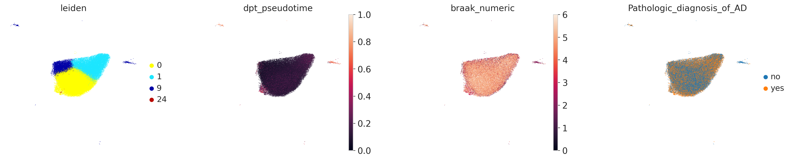
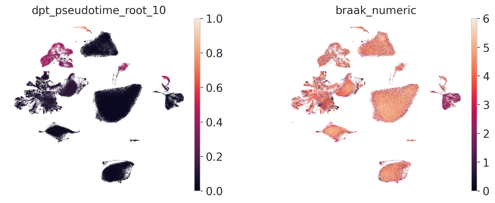
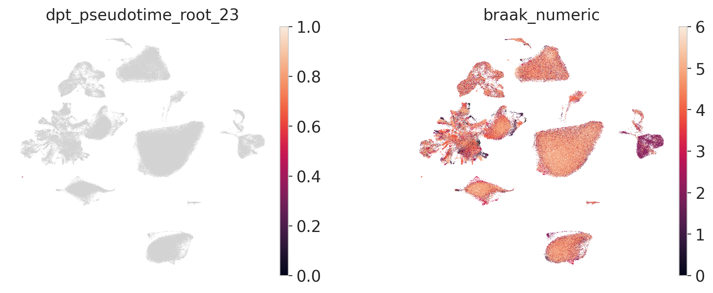
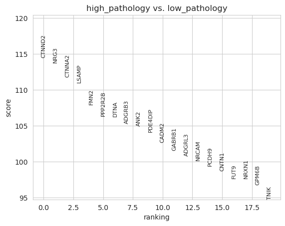
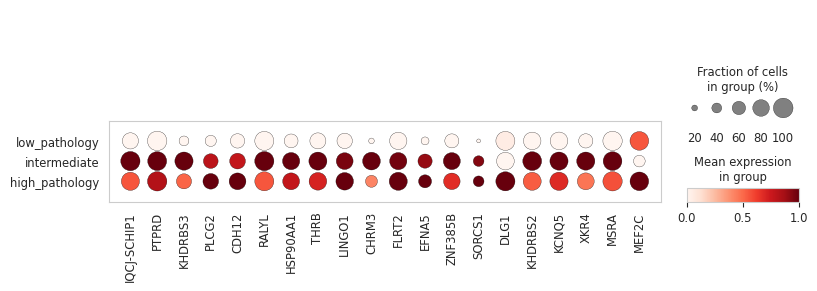
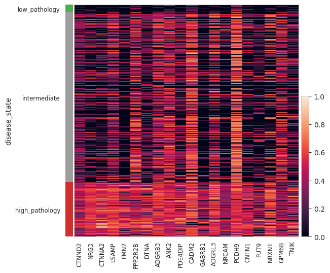
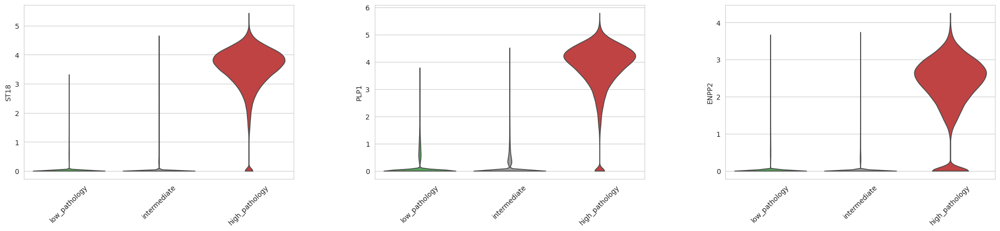

Alzheimer’s disease across EC, HC, and PFC
A comparative project testing whether disease progression is organized as a continuous transcriptional trajectory or as a set of discrete disease-associated states. The dashboard below follows the full pipeline from regional preprocessing to topology, disease mapping, structure validation, candidate drivers, gene programs, and module scoring.
Initial hypothesis → tested → revised model
Initial hypothesis: Alzheimer’s disease may develop through transcriptional trajectories, either globally across each region or locally within region-specific branches and cell-type compartments.
What we tested
UMAP, PAGA, DPT pseudotime, root sensitivity, CellRank, state-based mapping, drivers, and gene programs.
Why the trajectory model weakened
Pseudotime was root-dependent, Braak did not align consistently with ordering, PAGA was branching/fragmented, and CellRank did not reveal robust directed progression.
What the data support instead
Discrete disease-associated states with region-specific topology, cell-type composition, and molecular programs.
Final model
AD is not one universal trajectory. Each region balances ordered structure, local state transitions, and distinct molecular programs differently.
Cross-region snapshot
EC
Most progression-like structure, but still not a robust global trajectory.
HC
Discrete disease states with strong excitatory-neuron-specific signal.
PFC
Switch-like activation of high-pathology programs rather than gradual progression.
Project pipeline
Shared pipeline applied to each region before cross-region comparison.
flowchart TD
A[Step 0
Data preprocessing per region
QC / normalization / HVG / integration / PCA / harmony] --> B[Step 1
Unsupervised landscape
Neighbors / UMAP / Leiden / PAGA]
B --> C[Step 2
Disease mapping onto graph
AD fraction / Braak / cell-type composition]
C --> D[Step 3
Structure validation
Is there a continuous progression-like structure?]
D --> E{Step 4
Choose model strategy}
E -->|State-based| F[Step 5
Define disease-associated states
low / intermediate / high pathology]
E -->|Trajectory-like| G[Step 5
Define early / intermediate / late states]
F --> H1[Step 6
Candidate driver genes
DE between states / genes vs Braak / pathology-associated genes]
G --> H2[Step 6
Candidate driver genes
genes vs pseudotime / genes vs fate probabilities]
H1 --> I[Step 7
Gene programs
GO BP / Reactome / manual program definition]
H2 --> I
I --> J[Step 8
Module scoring
score_genes for each program]
J --> K[Step 9
Post hoc interpretation with cell types
shared vs cell-type-specific states]
K --> L[Step 10
Cross-region comparison
EC vs HC vs PFC]
EC — Entorhinal cortex
Step 1–2. Unsupervised landscape and disease mapping
Clusters, pathology overlay, and disease-associated states on the regional manifold.


Step 3–4. Structure validation and model choice
PAGA, DPT branch testing, and CellRank were used to assess whether EC supports a continuous trajectory.


Step 5–7. Disease states, drivers, and cell-type interpretation
State definition was followed by candidate driver analysis and post hoc cell-type interpretation.


Step 9–10. Gene programs and module scoring
Gene programs were defined from enrichment and visualized by module scoring.


HC — Hippocampus
Step 1–2. Unsupervised landscape and disease mapping
HC shows heterogeneous disease localization across multiple transcriptional islands.


Step 3–4. Structure validation and model choice
HC was repeatedly re-checked with multiple roots and local branches to test the trajectory hypothesis.






Step 5–7. Disease states, drivers, and cell-type interpretation
Driver analysis was performed globally and then refined in excitatory neurons to separate composition effects from state-specific signal.





Step 9–10. Gene programs and module scoring
HC programs emphasize synaptic remodeling, axon guidance, and stress responses, especially within excitatory cells.


PFC — Prefrontal cortex
Step 1–2. Unsupervised landscape and disease mapping
PFC displays clear island-like topology, with pathology occupying discrete transcriptional regions.


Step 3–4. Structure validation and model choice
CellRank and topology checks were used as negative tests for a trajectory model.


Step 5–7. Disease states, drivers, and cell-type interpretation
High pathology in PFC is characterized by sharply activated genes and distinct cell-type composition shifts.



Step 9–10. Gene programs and module scoring
PFC programs strongly emphasize myelination, axon-related processes, migration, and signaling in high pathology.


Cross-region comparison
Regional synthesis
The same pipeline was applied to each region, enabling direct conceptual comparison.
| Feature | EC | HC | PFC |
|---|---|---|---|
| Topology | Most ordered of the three | Fragmented / branch-like | Island-like and discrete |
| Trajectory support | Partial but unstable | Weak | Weak |
| Preferred model | Hybrid, leaning state-based | State-based | State-based |
| Disease-state logic | Structured disease-associated regions | Localized states with strong Exc component | Switch-like high-pathology state |
| Candidate drivers | Core pathology-associated genes | Global + Exc-specific drivers | Discrete high-pathology genes |
| Programs | Stress / migration / myelin | Synaptic / axon / stress | Myelin / migration / axon / signaling |